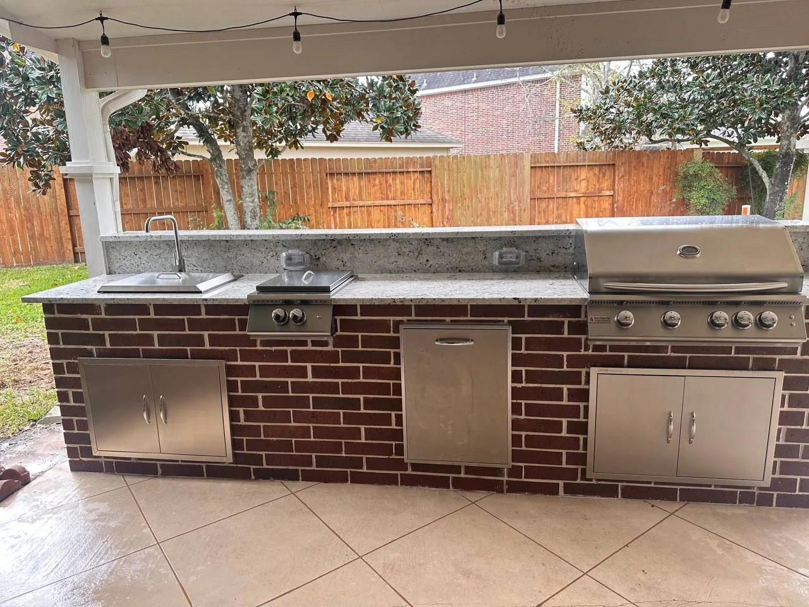
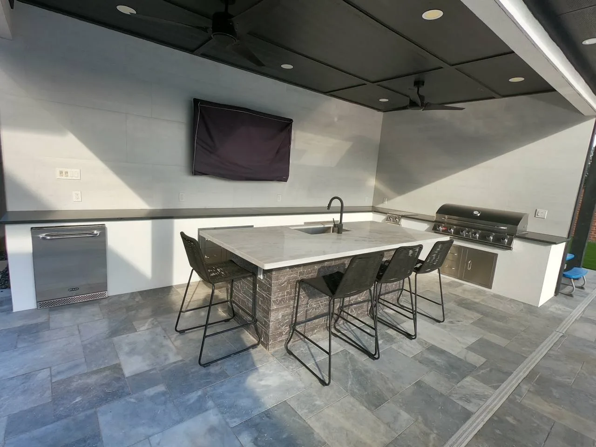
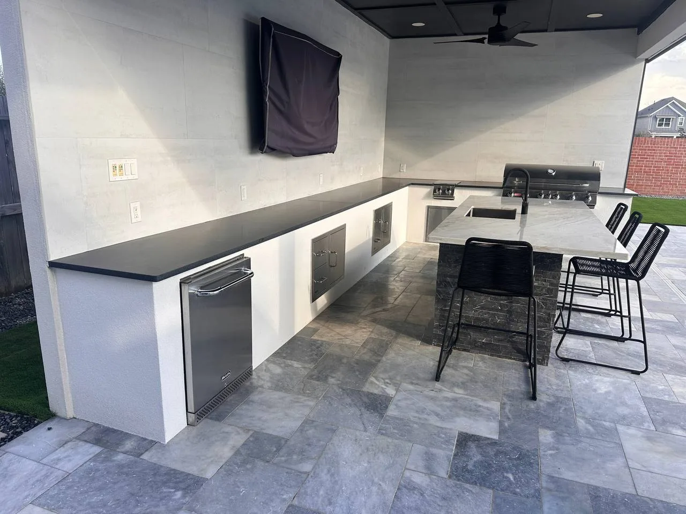
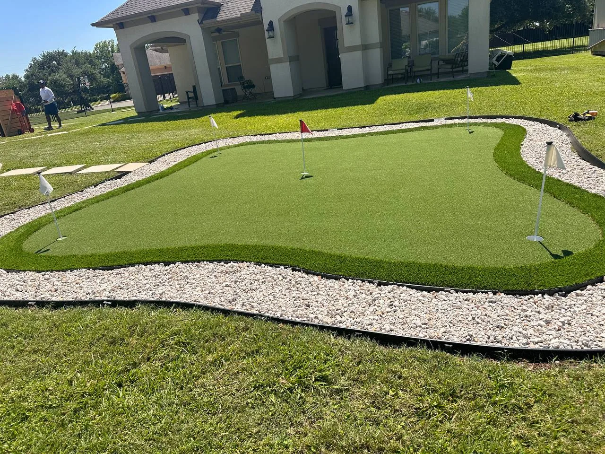
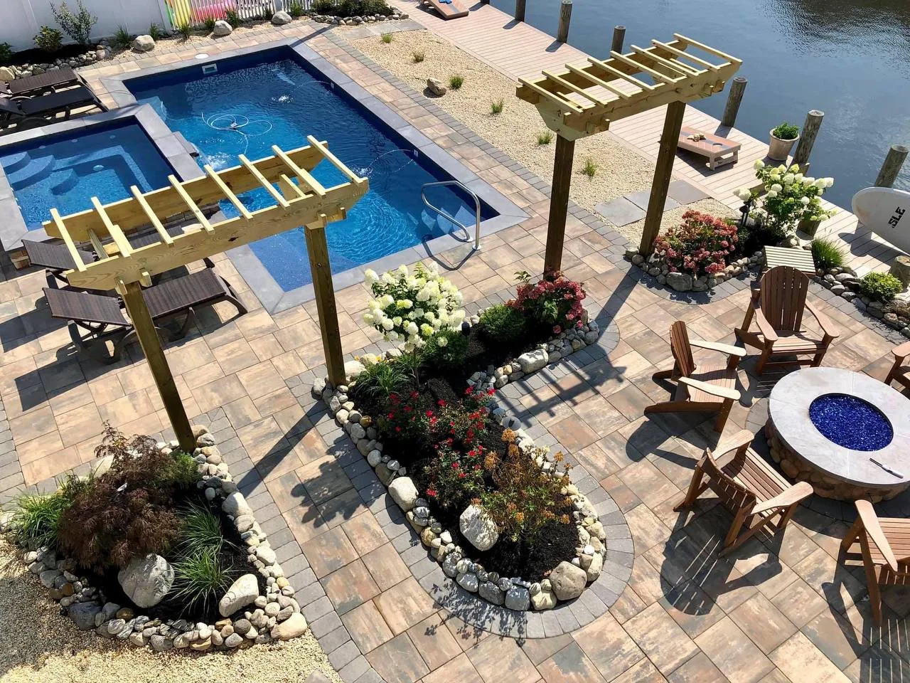
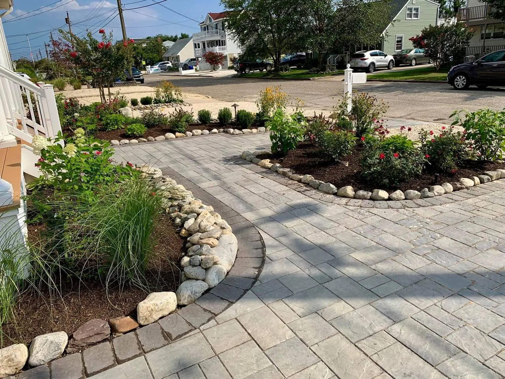

Hardscape Contractor in Pearland, TX
Outdoor Kitchens · Turf Putting Greens · Paver Patios & Driveways
- Shadow Creek Ranch · Silverlake · Southdown
- Free Estimate
Real Projects. Real Results. Right Here in Pearland.
We do not just talk about quality — we show you what we have built in your own backyard. Longhorn Hardscape has delivered outdoor kitchens, putting greens, paver driveways, and full outdoor living spaces to homeowners across Pearland. Scroll through our actual completed projects below.

Classic Brick & Granite Kitchen Under a Covered Patio
Full brick masonry base with a polished granite countertop, built-in gas grill, griddle, sink, and stainless access doors — all under a covered patio with string lights. This is the kind of kitchen that turns a Tuesday into a party.
See Our Kitchens

Modern L-Shape Kitchen — Porcelain, Marble & Dark Steel
Two angles of the same stunning build: a full L-shape outdoor kitchen with porcelain tile floors, marble island with bar seating for four, dark quartz countertops, mounted outdoor TV, built-in refrigerator, and a 6-burner built-in grill.

We design and install putting greens of any size, shape, and difficulty level.

Pool Surround, Pergolas, Fire Pit & Paver Patio — One Full Build
This aerial shows what a full backyard transformation looks like. Paver patio throughout, two timber pergolas, flower beds with stone borders, a fire pit seating area, and a pool surround — all designed and built as a single cohesive project in Pearland.
Outdoor Living Spaces
Paver Driveway with Landscaped Flower Beds & Rock Borders
Curb appeal starts at the street. This Pearland driveway features a sweeping paver layout with curved, professionally landscaped flower beds bordered in natural river rock — a home that stands out before you even step inside.
See Driveway ProjectsEverything We Build in Pearland
One contractor, every outdoor project — from the driveway to the back fence.
Why Pearland Homeowners Choose Longhorn
We know this area. We have built here. And we back everything we do.
We Know Pearland
Clay soils, drainage patterns, HOA aesthetics — we design for your specific Pearland conditions.
Premium Finishes
Granite, marble, porcelain, travertine — materials that look great and last decades in Texas.
No-Pressure Consultation
We visit your home, assess the project, and provide your estimate as soon as possible. Zero obligation.
Pearland Hardscape — Frequently Asked Questions
Common questions from Pearland homeowners before their project starts.
Yes. We have built multiple outdoor kitchens in Pearland — from classic brick-and-granite setups to modern stucco designs with L-shaped islands, bar seating, built-in grills, refrigerators, and outdoor TVs. We bring photos of past Pearland builds to your consultation.
Absolutely. We design and install custom putting greens with professional-grade synthetic turf, multiple holes and flag pins, fringe chipping areas, and rock or paver borders. Built with proper drainage for Pearland heavy rain events — no puddling, no soggy spots.
We serve all of Pearland including Shadow Creek Ranch, Southdown, Silverlake, Massey Ranch, Pearland Town Center, and zip codes 77581, 77584, and 77588. We also cover nearby Friendswood, Alvin, and League City.
Timeline depends on the size and complexity of the project. We provide a clear, realistic schedule during your free consultation before any work begins. We always work efficiently to minimize disruption to your household.
Serving Pearland from Our Missouri City Location
6140 Highway 6 #3116, Missouri City, TX 77459 — minutes from Pearland via Hwy 6 and Hwy 288. (346) 551-8340